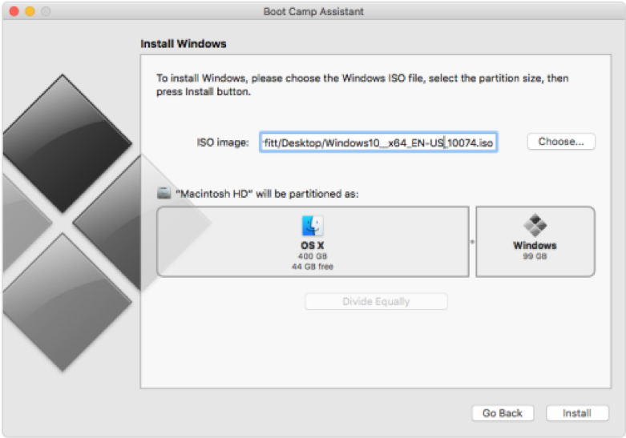
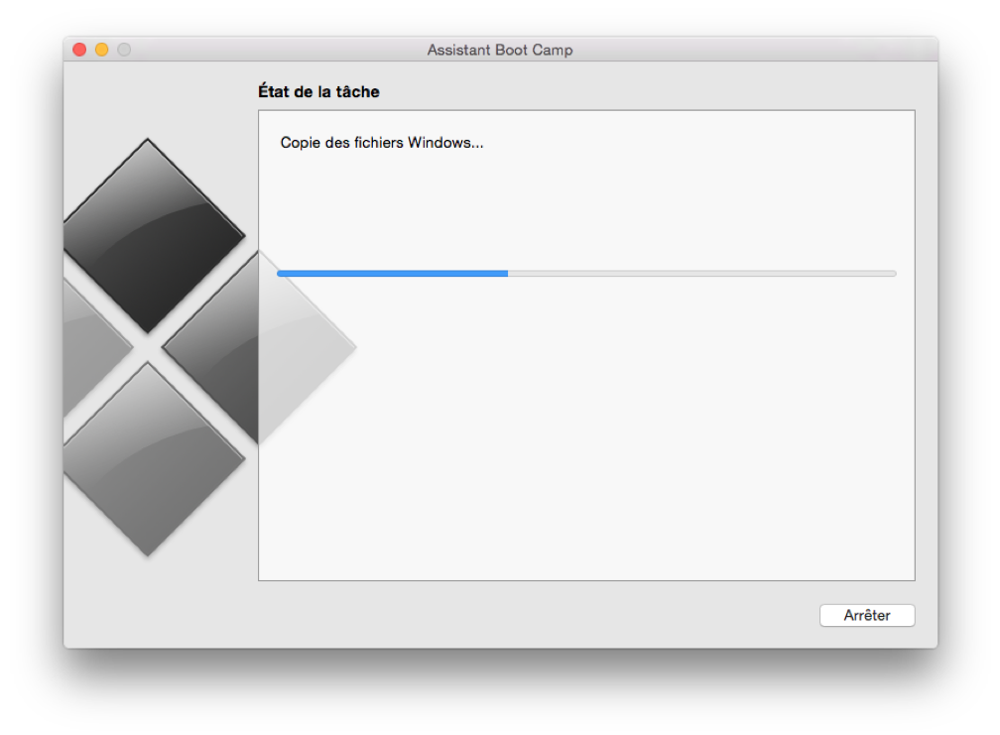
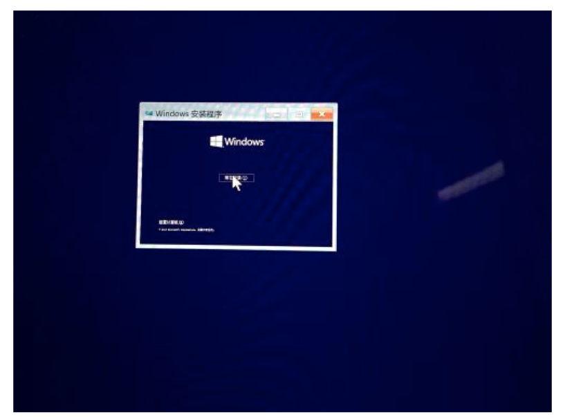
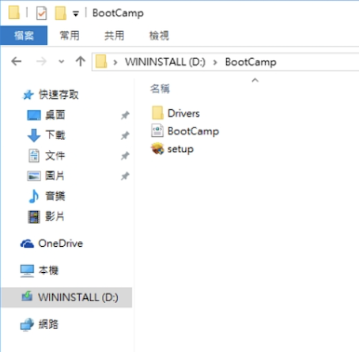
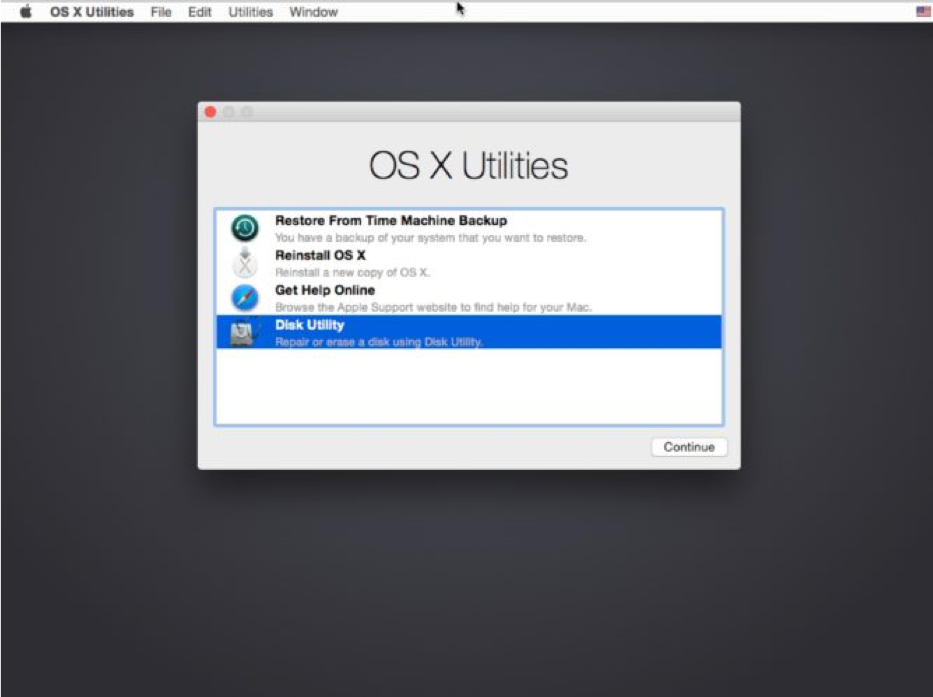
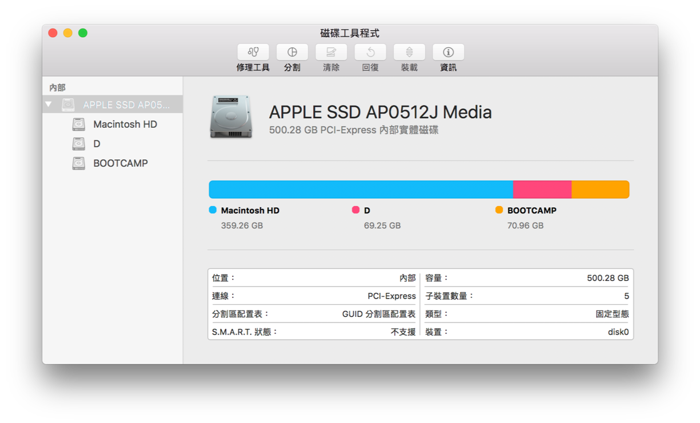
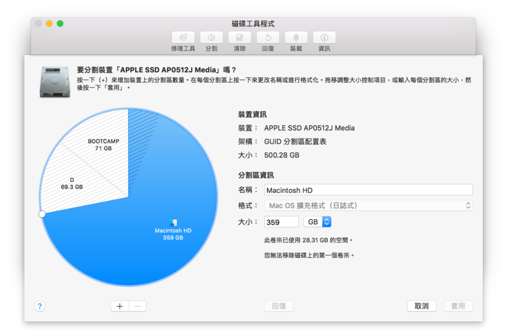
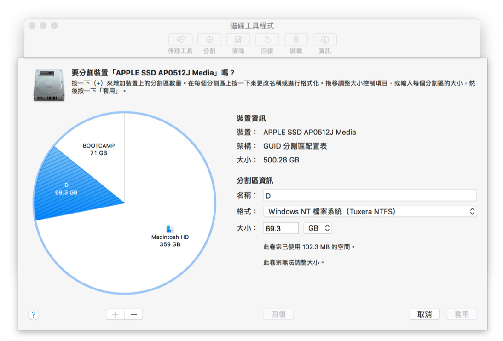

Bootcamp: File sharing between Mac OS X and Windows 10 on MacBook Pro
Here are some reason you should consider deploying Windows on your Mac device. 1. More games with better performance in Windows OS. 2. Some Applications don't work in macOS or not support all functions. 3. Developers need to test projects in Windows OS.
So, I shared my experience to save your time of installing Windows on MacBook Pro. ## Hardward & Software preparation + Hardware Product model: Macbook Pro 2017 + Software - Win10 ISO You can go to this url to downlaod ISO: https://www.microsoft.com/zh-tw/software-download/windows10 Choose version:Windows 10, Choose language: English and choose 64-bit version
Use Bootcamp to install Win10
Step 1. Launch Bootcamp Assistant from th Utilities folder in Applications. Then, load your WIN10 ISO and allocate appropriate disk size. 
Step 2. Wait for some time, the processing will download WIN10 support software. 
Step 3. Finally, you will see the WIN10 setup screen. 
Step 4. Enter "Explorer", you wil see
WININSTALL (D:)and clickBootCamp folderto execute setup program. (Don't choose anything else) 
Partition NTFS for file sharing
Step 1. Shut down your Mac.
Step 2. Hold down the
Command and R keysdown and press the power button.Step 3. Keep holding Command and R keys until the Apple logo appears on the screen.
Step 4. Then, you will see a screen saying macOS Utilities(or if your Mac is older, OS X Utilities).
Step 5. Choose "Disk Utility" 
Step 6. Choose "APPLE SSD ..." and click partition 
Step 7. Click '+' to new partition section 
Step 8. Suggest selecting the NTFS option 
Step 9. If the partition is succes, you will see the new partition section between Mac OS X and Windows 10
Error - blue screen when boot Windows 10
You finish above procedures, if WIN10 can't boot anymore and show blue screen with error message: 0xd000000e + Reason: The installation creates a hybrid MBR which is completely unnecessary. Windows will not boot in EFI mode but in BIOS mode instead and crash. + Solution: Enter Mac OS X to open terminal$ sudo apt-get install gdisk
$ sudo gdisk /dev/sda0 ("sda0" depands on your primary partition)
Type p to view the partition table to verify you're working on the correct disk
Type x to enter the experts' menu
Type n to create an empty protective MBR
Type w to save your changes, You'll be asked to confirm this action
Finally, reboot you Mac and enter WIN10 OS successfully.
Necessary third party softwares
To enable Mac OS X can write data at shared partition, I provide some software infomations as below: 1 OSXFUSE 2 ntfs-3g
Reference: https://www.innoq.com/en/blog/triple-booting-a-mac/